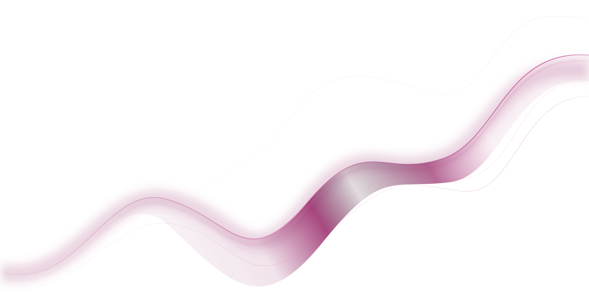
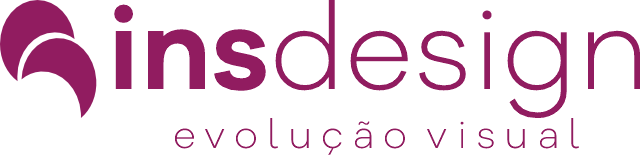

Tipografia
Voz e personalidade


DESIGN E IDENTIDADE VISUAL
Identidade visual e comunicação criativa para
marcas que querem ser reconhecidas.

Design para mídias sociais

Design com personalidade

 estratégia + expressão
estratégia + expressãoSOBRE A INSDESIGN
Criamos identidades visuais e conteúdos que traduzem a personalidade de cada negócio. Combinamos função e estética para dar consistência à sua comunicação.
O QUE FAZEMOS
Uma linguagem visual que conecta
sua marca às pessoas certas.
Voz e personalidade
O universo da sua marca
Presença consistente
Conceito e expressão
Design em movimento
PROJETOS SELECIONADOS
Uma seleção de trabalhos
publicados pela Insdesign.
NOSSO PROCESSO
Ouvimos sua história, seu momento e o que sua marca precisa comunicar.
Definimos uma direção criativa alinhada ao seu público e à sua essência.
Transformamos a estratégia em uma linguagem visual com personalidade.
Organizamos as aplicações para que sua marca se apresente com consistência.
NOSSA VISÃO
O design dá forma àquilo que
torna sua marca única.
VAMOS CRIAR JUNTOS
Conte o que você tem em mente.
Vamos dar forma à sua próxima ideia.